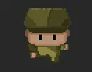

My Portfolio
- Harmony
- The Life of Mine
- The Girl That Loves Chipotle
Harmony is a project that my brother and I have been working on. It involves a player-made character that is fighting in a war when they are met with new creatures. They go about learning how to work and fight with these creatures and eventually merge. Below is a rudimentary sprite of the player in early stages of the game.
This game goes through a first person story based adventure that shows insight into the life of a highschool boy named Tom. The setting is in a school and Tom's home neighborhood as he has to solve mysteries and deal with personal relationships.
This game is more of an experience that showcases the love story between the character and 'the girl that loves Chipotle'. The goal is to emphasize the impact games can have and the art that can be seen on a screen with lines of code.